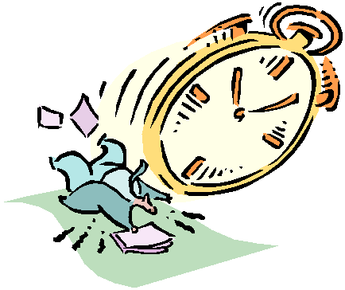

| Home => TimeKeeper |
| The latest version of TimeKeeper is dated May 7, 2004 |
The off-line version of TimeKeeper is a single web page called timekeeper.html.
To download it to your computer, right click on this link.
If you are using Internet Explorer select "Save Target As..." Firefox users should select "Save Link to Disk...". Mozilla users should select "Save Link Target As...". Netscape Navigator 4 users used to select "Save Link As...". You can save the timekeeper.html file anywhere on your computer. (Note: Windows users may find that the file extension is truncated by IE in the download process from html to htm. They both work fine however).
There is no installation procedure, no programs to run. After it has been copied to your computer, find the timekeeper.html file using Windows Explorer and double click on it to run it. Your computer should start up your web browser program when you double click on any file that ends with ".html" or ".htm".
To avoid having to remember the directory/folder where timekeeper.html was saved, and to avoid having to use windows explorer, you can make TimeKeeper a Favorite in Internet Explorer or a Bookmark in Netscape Navigator. You will probably want to rename the Favorite/Bookmark to something simple and obvious such as "TimeKeeper". It defaults to a long name because the name comes from the page title and the page title is set dynamically to indicate the current timer status.
AOL users will likely find that AOL starts running, just to display this one, lone, off-line web page. To prevent this, start your web browser and then invoke TimeKeeper as an IE Favorite or Navigator Bookmark.
Note: If you are upgrading from an old version of TimeKeeper to a new one, there is a chance the new one will start fresh. That is, it may not recognize the data (cookies) from the old version because the format of the cookie data has changed a few times. If a work day is not active, this is irrelevant. If a work day is active, note the time worked so far today before upgrading. You can also rename the old TimeKeeper file before downloading the new one. The old one will still read the old data which will remain until a Reset is done on the current project.
| Top of Page | Home => TimeKeeper |
| Last updated: May 7, 2004 | TimeKeeper: Download | Usage Notes | Change History | Run On-Line | Tech Notes | Enhancements |